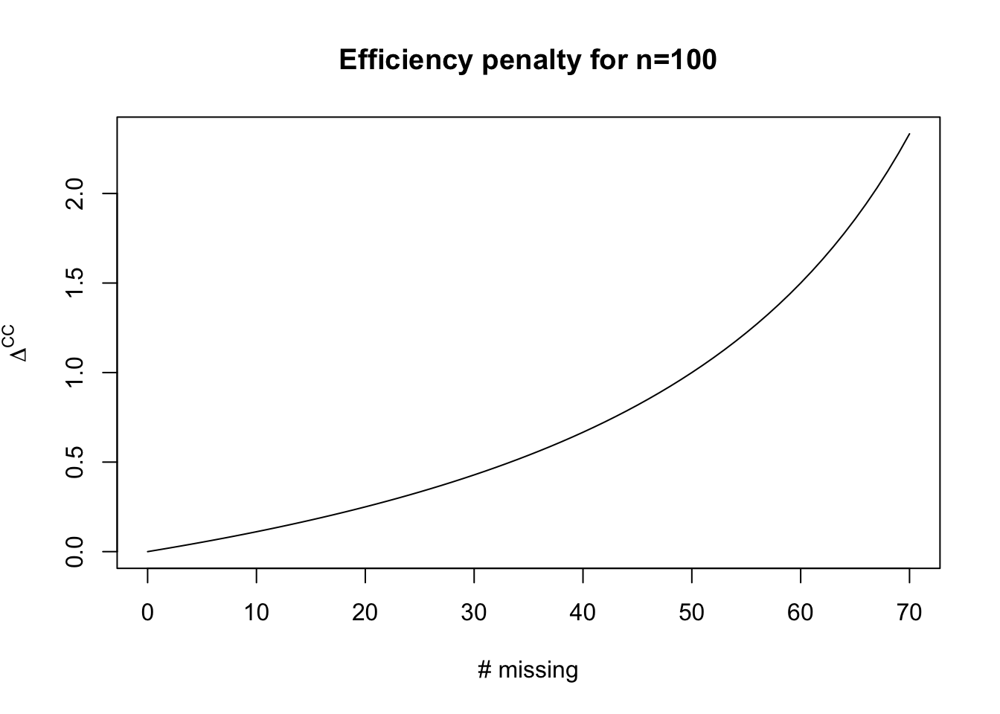
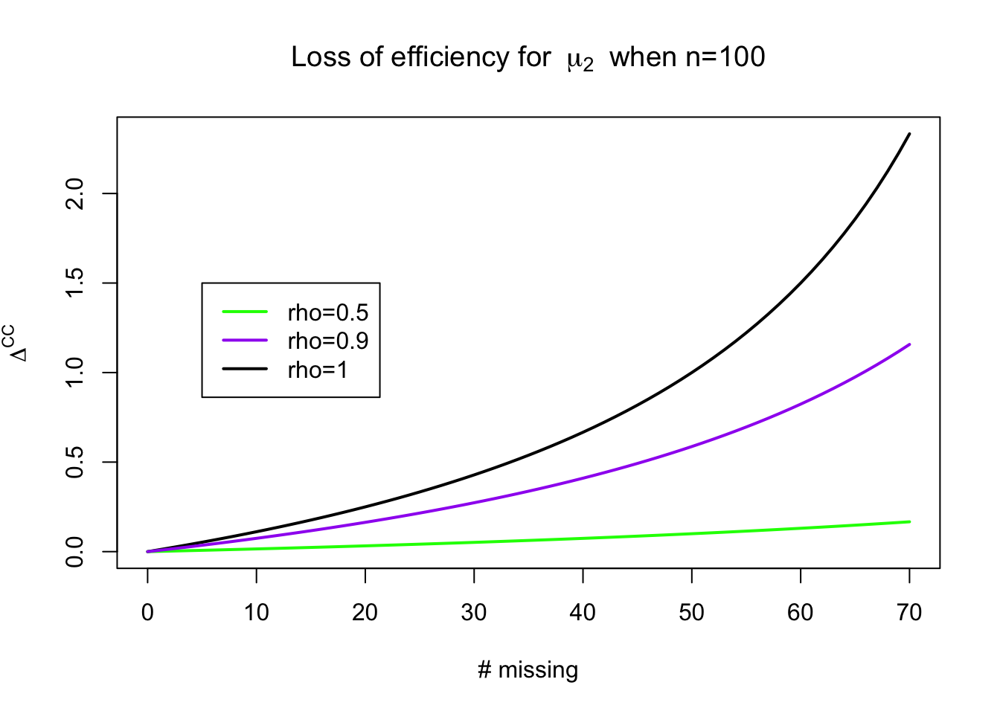

Missing data lecture 2
| Notation | Meaning | Domain |
|---|---|---|
| \(Y\) | \(n\times K\) matrix, collection of measurements of interest | \(\R^{n \times K}\) |
| \(\tilde{y}\) | Realization of \(Y\) | \(\R^{n \times K}\) |
| \(Y_{ij}\) | Element of \(Y\), random variables | \(\R\) |
| \(\tilde{y}_{ij}\) | Particular realization of \(Y_{ij}\) | \(\R\) |
| \(Y_{i}\) | \(i^\mathrm{th}\) row of \(Y\), random variables | \(\R^K\) |
| \(\tilde{y}_{i}\) | Particular realization of \(Y_{i}\) | \(\R^K\) |
| \(y_{i}\) | Arbitrary element of \(\R^K\), for use in density functions related to \(Y_i\) | \(\R^K\) |
| \(M\) | \(n\times K\) binary matrix of missingness indicators | \(\{0,1\}^{n \times K}\) |
| \(\tilde{m}\) | Realization of \(M\) | \(\{0,1\}^{n \times K}\) |
| \(M_{ij}\) | Element of \(M\), random variable | \(\{0,1\}\) |
| \(M_{i}\) | \(i^\mathrm{th}\) row of \(M\), random variables | \(\{0,1\}^{K}\) |
| \(\tilde{m}_{ij}\) | Realization of \(M_{ij}\) | \(\{0,1\}\) |
| \(\tilde{m}_{i}\) | Realization of \(M_{i}\) | \(\{0,1\}^K\) |
| \(m_{i}\) | Arbitrary element of \(\{0,1\}^K\) for use in PMFs for \(M_i\) | \(\{0,1\}^K\) |
| \(R_i\) | Number of observed values for row \(i\) in \(Y\), \(\sum_{j=1}^K (1 - M_{ij})\) | \(\mathbb{N}\) |
| \(Y_{(0)i}\) | Observed elements of \(Y_i\) | \(\R^{R_i}\) |
| \(\tilde{y}_{(0)i}\) | Realization of \(Y_{(0)i}\) | \(\R^{R_i}\) |
| \(y_{(0)i}\) | Arbitrary element of \(\R^{R_i}\) | \(\R^{R_i}\) |
| \(Y_{(1)i}\) | Unobserved or missing elements of \(Y_i\) | \(\R^{K - R_i}\) |
| \(\tilde{y}_{(1)i}\) | Realization of \(Y_{(1)i}\) | \(\R^{K - R_i}\) |
| \(y_{(1)i}, y^\star_{(1)i}\) | Arbitrary elements of \(\R^{K - R_i}\) | \(\R^{K - R_i}\) |
Recap
Missingness mechanisms
Mechanisms relate to the distribution: \[ f_{M_i \mid Y_i}(M_i = \tilde{m}_i \mid Y_i = y_i, \phi), \] where \(\phi\) are the parameters that govern the missingness mechanism.
Missing completely at random (MCAR)
Data are said to be MCAR if the following holds for all \(i\), \(y_i\), \(y^\star_i\), and \(\phi\): \[ f_{M_i\mid Y_i}(M_i = \tilde{m}_i \mid Y_i = y_i, \phi) = f_{M\mid Y}(M_i = \tilde{m}_i \mid Y_i = y^\star_i, \phi). \]
Missing at random (MAR)
Missing at random data are characterized by the following equality for all \(i\), \(y_{(1)i}\), \(y^\star_{(1)i}\), and \(\phi\): \[ f_{M_i\mid Y_i}(M_i = \tilde{m}_i \mid Y_{(0)i} = \tilde{y}_{(0)i}, Y_{(1)i} = y_{(1)i}, \phi) = f_{M_i\mid Y_i}(M_i = \tilde{m}_i \mid Y_{(0)i} = \tilde{y}_{(0)i}, Y_{(1)i} = y^\star_{(1)i}, \phi) \]
Univariate MAR data
Univariate MAR data is useful to consider because it elucidates a key assumption that can be used in MAR analyses.
Suppose we have a single measurement on \(n\) individuals, \(Y_i\) and \(r\) of the individuals in our sample have observations \(\tilde{y}_i\) while \(n-r\) individuals have missing values for \(Y_i\) (i.e. \(\tilde{y}_{(1)i} = \tilde{y}_{i}\), \(\tilde{y}_{(0)i} = \emptyset\)). Suppose we also have iid measurements and an iid missingness process.
Writing out the missingness mechanism for this scenario gives us: \[ \begin{aligned} f_{M_i\mid Y_i}(M_i = \tilde{m}_i \mid Y_{(0)i} = \tilde{y}_{(0)i}, Y_{(1)i} = y_{(1)i}, \phi) & = f_{M_i\mid Y_i}(M_i = \tilde{m}_i \mid Y_{(0)i} = \tilde{y}_{(0)i}, Y_{(1)i} = y^\star_{(1)i}, \phi) \\ & = f_{M_i\mid Y_i}(M_i = \tilde{m}_i \mid \phi) \end{aligned} \] This implies something about the relationship between the units the have observed data and those that do not: \[ \begin{aligned} f_{Y_i \mid M_i}(Y_{i} = y_{i} \mid M_i = \tilde{m}_i, \theta) & = \frac{f_{M_i\mid Y_i}(M_i = \tilde{m}_i \mid Y_{i} = y_i, \phi) f_{Y_i}(Y_i = y_i \mid \theta)}{f_{M_i\mid Y_i}(M_i = \tilde{m}_i \mid \phi)} \\ & = f_{Y_i}(Y_i = y_i \mid \theta) \end{aligned} \] This implies that \[ \begin{aligned} f_{Y_i \mid M_i}(Y_{i} = y_{i} \mid M_i = 1, \theta) & = f_{Y_i \mid M_i}(Y_{i} = y_{i} \mid M_i = 0, \theta) \end{aligned} \] Thus, we can use the distribution we learn from the complete cases as the distribution for the cases that are missing. This idea holds for more general missingness patterns with more measurements. We’ll see this later in the course.
Continuing with our example from last lecture
The following example is adapted from Mealli and Rubin (2015): Suppose we’re analyzing data from that Crohn’s disease trial and \(Y_i\) has two components: \(Y_{i1}\) is CDAI at visit 1 and \(Y_{i2}\) is CDAI at visit 2. For patient \(i\) suppose that \(m_i = (0, 1)\), or that \(Y_{i2}\) is missing but \(Y_{i1}\) is observed.
Bringing this example into line with our previous notation, \(Y_{(0)i} \equiv Y_{i1}\) and \(Y_{(1)i} \equiv Y_{i2}\). Then \(\tilde{y}_{(0)i} \equiv \tilde{y}_{i1}\).
Consider two scenarios:
\(Y_{i2}\) is missing because \(Y_{i1} > \phi\). Given that \(0^0 = 1\), in this scenario the missingness mechanism can be translated as: \[ f_{M_{i2}\mid Y_i}(M_{i2} = m_{i2} \mid Y_{(0)i} = \tilde{y}_{(0)i}, Y_{(1)i} = y_{(1)i}, \phi) = \ind{\tilde{y}_{(0)i} > \phi}^{m_{i2}}(1 - \ind{\tilde{y}_{(0)i} > \phi})^{1 - m_{i2}} \]
\(Y_{i2}\) is missing because \(Y_{i2} > \phi\). This mechanism is translated as \[ f_{M_{i2}\mid Y_i}(M_{i2} = m_{i2} \mid Y_{(0)i} = \tilde{y}_{(0)i}, Y_{(1)i} = y_{(1)i}, \phi) = \ind{y_{(1)i} > \phi}^{m_{i2}}(1 - \ind{y_{(1)i} > \phi})^{1 - m_{i2}} \] In scenario 1 the data are MAR because the mass function is a function of \(\tilde{y}_{(0)i}\) only, (i.e it depends only on \(Y_{i1}\)), while in scenario 2 the data do not satisfy the definition of MAR.
Generalizing the example
Let’s make this example more general. The following is from Little and Rubin (2019, 23). Again consider the bivariate case with \(y_{i1}, y_{i2}\). There are 4 possible missing data patterns: \[ (m_{i1}, m_{i2}) \in \{(0,0), (0,1), (1,0), (1,1)\} \] We’ll need to define \(f_{M \mid Y}(m_{i1} = r, m_{i2} = s \mid y_{i1}, y_{i2}, \phi)\). To simplify the notation, let \[ g_{rs}(y_{i1}, y_{i2}, \phi) = f_{M \mid Y}(m_{i1} = r, m_{i2} = s \mid y_{i1}, y_{i2}, \phi) \] The MAR assumption implies the following: \[ \begin{aligned} g_{11}(y_{i1}, y_{i2}, \phi) & = g_{11}(\phi) \\ g_{01}(y_{i1}, y_{i2}, \phi) & = g_{01}(y_{i1}, \phi) \\ g_{10}(y_{i1}, y_{i2}, \phi) & = g_{10}(y_{i2}, \phi) \\ g_{00}(y_{i1}, y_{i2}, \phi) & = 1 - g_{10}(y_{i2}, \phi) - g_{01}(y_{i1}, \phi) - g_{11}(\phi) \end{aligned} \] Thus the probability that \(y_{ij}\) is missing can depend only on \(y_{i(-j)}\), which is a bit odd.
Little and Rubin (2019) proposes the following modification:
\[ \begin{aligned} g_{11}(y_{i1}, y_{i2}, \phi) & = g_{1+}(y_{i1}, \phi)g_{+1}(y_{i2}, \phi) \\ g_{01}(y_{i1}, y_{i2}, \phi) & = (1 - g_{1+}(y_{i1}, \phi))g_{+1}(y_{i2}, \phi) \\ g_{10}(y_{i1}, y_{i2}, \phi) & = g_{1+}(y_{i1}, \phi)(1 - g_{+1}(y_{i2}, \phi)) \\ g_{00}(y_{i1}, y_{i2}, \phi) & = (1 - g_{1+}(y_{i1}, \phi))(1 - g_{+1}(y_{i2}, \phi)) \end{aligned} \] While this is maybe more realistic, though it does make an assumption that \(m_{i1}\) and \(m_{i2}\) are conditionally independent given \(y_{i1}, y_{i2}\), it is also hard to estimate, because we won’t observe missing values of \(y_{i1}\) and \(y_{i2}\).
This is a scenario called missing-not-at-random, or MNAR. This is defined in the next subsection.
Missing-not-at-random (MNAR)
MNAR data is characterized by the following relationship:
\[ f_{M_i\mid Y_i}(M_i = \tilde{m}_i \mid Y_{(0)i} = \tilde{y}_{(0)i},Y_{(1)i} = y_{(1)i}, \phi) \neq f_{M_i\mid Y_i}(M_i = \tilde{m}_i \mid Y_{(0)i} = \tilde{y}_{(0)i},Y_{(1)i} = y^\star_{(1)i}, \phi) \] for some \(\phi\) and \(y_{(1)i} \neq y^\star_{(1)i}\) (Mealli and Rubin 2015).
The version using conditional dependence is called missing not always at random, or MNAAR, which is
\[ f_{M_i\mid Y_i}(M_i = m_i \mid Y_{(0)i} = y_{(0)i},Y_{(1)i} = y_{(1)i}, \phi) \neq f_{M_i\mid Y_i}(M_i = m_i \mid Y_{(0)i} = y_{(0)i},Y_{(1)i} = y^\star_{(1)i}, \phi) \]
for some \(\phi, m_i, y_{(0)i}\) and \(y_{(1)i} \neq y^\star_{(1)i}\)(Mealli and Rubin 2015).
Our textbook mentions that sometimes MAR can yield better results than MNAR, citing Rubin, Stern, and Vehovar (1995). This is something we’ll explore later on in the course, namely how we would determine whether it was worth it to fit an MNAR model vs. a MAR model. Not surpisingly, like most things in statistics, the answer is “It depends.”
Complete case analysis
The most common approach to missing data analysis is complete case analysis, or CCA. Given the matrix \(M\) and its realization \(\tilde{m}\), the complete cases are those rows \(i\) such that \(\sum_{j=1}^K \tilde{m}_{ij} = 0\). Let these indices be denoted \(\mathcal{R} = \{i \mid \sum_{j=1}^K \tilde{m}_{ij} = 0, i = 1, \dots, n\}\). Let the size of this set be \(r = \abs{\mathcal{R}}\).
Complete case analysis is, in general, only valid when the missingness mechanism is MCAR, though depending on what your estimand of interest is, there can be exceptions for MAR and even MNAR missingness1.
The first issue with complete case analysis is that, even if your estimator is unbiased, your estimator will not be efficient. A simple example demostrates the problem.
Suppose we have two measurements of interest, \(Y_{i1}\) and \(Y_{i2}\) for \(n\) individuals and that they are jointly multivariate normal: \[ (Y_{i1}, Y_{i2}) \sim \text{MultiNormal}\lp(\mu_1, \mu_2), \begin{bmatrix} \sigma^2_1 & \sigma_{12} \\ \sigma_{12} & \sigma_2^2 \end{bmatrix} \rp \] We’ll consider the scenario in which \(\mu_1, \mu_2\) are the estimands of interest, and Further, suppose that \(r\) of those individuals have complete observations, (i.e. \(\tilde{y}_{(0)i} = (\tilde{y}_{i1}, \tilde{y}_{i2})\)) and \(n-r\) of those individuals have missing values for \(Y_{i2}\) (i.e. \(\tilde{y}_{(0)i} = (\tilde{y}_{i1})\)).
The parameters of interest are all of the unknown parameters of the multivariate normal distribution. Using only the \(r\) complete cases will allow us to estimate the mean of \(\mu_1\). The sample mean, which we’ll denote \(\bar{y}^{\mathrm{CC}}_{1}\), has variance \(\sigma_1^2/r\). We could have used all \(n\) observations to estimate the mean, which we’ll call the efficient estimator, or \(\bar{y}^\mathrm{eff}_1\) which would instead have variance \(\sigma_1^2 / n\). We can represent the variance of the complete case estimator as a multiple of the variance of the efficient estimator: \[ \text{Var}\lp \bar{y}^{\mathrm{CC}}_{1}\rp = \text{Var}\lp \bar{y}^{\mathrm{eff}}_{1}\rp(1 + \Delta^\mathrm{CC}) \] In this case, \(\Delta^{\mathrm{CC}} = \frac{n - r}{r}\).
For the mean of \(Y_{i2}\), \(\mu_2\), the efficiency loss is: \[ \Delta^{\mathrm{CC}} \approx \frac{(n-r)\rho^2}{n(1 - \rho^2) + r \rho^2} \] We’ll prove this later in the class when we work through likelihood theory for incomplete data.

Bias of CCA
We showed earlier that the bias of the complete case analysis was dependent on the covariance between the missingness indicator and the response; another way to decompose the bias is via the following representation of the sample mean. Recall that \(\mathcal{R} = \{i \mid \sum_{j=1}^K \tilde{m}_{ij} = 0, i = 1, \dots, n\}\); we can define the complement of this set \(\mathcal{R}^\comp\). Then we can represent the sample mean as: \[ \bar{y} = \frac{r}{n}\bar{y}^\mathrm{CC} + (1 - \frac{r}{n})\bar{y}^{\mathcal{R}^\comp} \] Note that the sample mean may be unobservable because some units may be missing \(y_i\). Then, conditional on the missingness pattern that was observed, the bias of the
\[ \Exp{\bar{y}^\mathrm{CC} - \bar{y} \mid M = \tilde{m}} = \lp 1 - \frac{r}{n}\rp(\Exp{\bar{y}^\mathrm{CC} \mid M = \tilde{m}} - \Exp{\bar{y}^{\mathcal{R}^\comp} \mid M = \tilde{m}}) \]
Weighting estimators
An alternative to straight CCA is the class of weighting estimators. These estimators are asymptotically unbiased under the assumption of MAR.
The idea behind weighting estimators is similar to weighted estimators used in survey analysis. A weighting estimator you may have encountered before is called the Horvitz-Thompson estimator. Suppose we have a populaton of size \(N\) and we wish to estimate the mean of some fixed, but unknown, scalar quantity, \(Y_i\). If create a sample of size \(n\) from the population with known weights \(\pi_i\), we can compute an unbiased estimator of the mean with \(\bar{y}^\mathrm{HT}\): \[ \bar{y}^\mathrm{HT} = \frac{1}{N} \sum_{j=1}^n \frac{y_j}{\pi_j} \] This estimator can be written as a sum over the population of size \(N\) with the introduction of an inclusion indicator, \(I_i\) which equals \(1\) if the \(i\) is sampled and \(0\) otherwise: \[ \bar{y}^\mathrm{HT} = \frac{1}{N} \sum_{i=1}^N \frac{y_i I_i}{\pi_i} \] Treating \(y_i\) as fixed unknown quantities and \(I_i\) as a random quantity gives the following unbiased estimator for the population average: \[ \begin{aligned} \ExpA{\bar{y}^\mathrm{HT}}{I_i} & = \frac{1}{N} \sum_{i=1}^N \ExpA{\frac{y_i I_i}{\pi_i}}{I_i} \\ & = \frac{1}{N} \sum_{i=1}^N \frac{y_i \pi_i}{\pi_i}\\ & = \frac{1}{N} \sum_{i=1}^N y_i \end{aligned} \]
References
Little, Roderick JA, and Donald B Rubin. 2019. Statistical Analysis with Missing Data. John Wiley & Sons.
Mealli, Fabrizia, and Donald B. Rubin. 2015. “Clarifying Missing at Random and Related Definitions, and Implications When Coupled with Exchangeability: Table 1.” Biometrika 102 (4): 995–1000. https://doi.org/10.1093/biomet/asv035.
Rubin, Donald B, Hal S Stern, and Vasja Vehovar. 1995. “Handling ‘Don’t Know’ Survey Responses: The Case of the Slovenian Plebiscite.” Journal of the American Statistical Association 90 (431): 822–28.
Footnotes
One exception is regression with missing predictors; scenarios in which the predictors have MNAR missingness that doesn’t depend on the outcome can be analyzed with CCA.↩︎